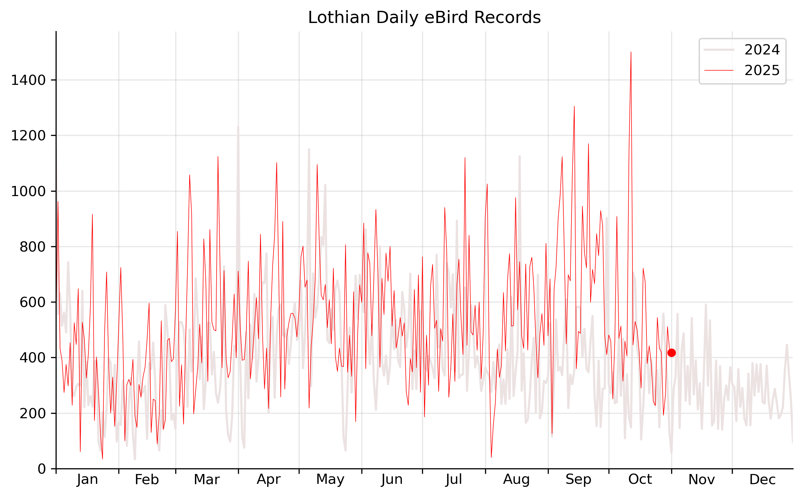

Lothian interesting bird sightings
Report generated on 24/09/2025 at 19:13
Past 5 days data from eBird showing 340 notable records of 107 species.
In total, 3503 observations of 142 species were recorded across 110 locations.
Based on 216 checklists submitted by 72 birders.
This report covers Edinburgh & the Lothians and includes unverified and provisional records.
Highlight species:
- Surf Scoter, White-winged Scoter, Marsh Sandpiper, Spotted Redshank, Black-throated Diver, Sooty Shearwater
- Barnacle Goose, Scaup, Ruff, Curlew Sandpiper, Little Stint, Arctic Skua, Mediterranean Gull, Red-necked Grebe, Manx Shearwater, Merlin, Yellow Wagtail
•
23/09 1000, Musselburgh--Levenhall Links (General) (Sam Shutt) - "Including flyovers"•
23/09 300, Aberlady Bay LNR (Niall Dinwoodie)•
21/09 200, Musselburgh--Esk Mouth (Timm Krueger)•
20/09 200, Musselburgh (General) (Ed Puddington)•
20/09 390, Musselburgh--New Lagoons (Pasi Hyvönen)•
24/09 75, Barns Ness (Liam Morrison)•
24/09 1, Musselburgh--Sea Wall (Jonathan Farooqi)•
24/09 146, Abercorn, West Lothian. (James Porter) - "By shoreline, then flew inland with a very young juvenile remaining."•
24/09 70, Clerkington (David Kelly) - "Over south then west"•
24/09 9, Bilston Glen Viaduct - Roslin Path (Duncan Wiseman) - "Flyover"•
24/09 137, Cuthill water treatment area + river (James Porter) - "Total of 3 skeins over."•
24/09 87, Roslin Glen Country Park and Rosslyn Chapel (Duncan Wiseman) - "Flyover"•
24/09 356, Burdiehouse Burn Valley Park LNR (Lukasz Pulawski)•
23/09 30, Musselburgh--Levenhall Links (General) (Sam Shutt)•
23/09 2000, Aberlady Bay LNR (Niall Dinwoodie)•
23/09 193, Harperrig Reservoir (James Porter) - "Along NE shoreline."•
23/09 20, Penicuick to Dalkeith Railway Path (Lukasz Pulawski)•
23/09 25, Cramond Island (Jarrod Hadfield) - "Over"•
22/09 78, Gladhouse Reservoir (Duncan Wiseman)•
22/09 34, Peeswit Moss SSSI (Duncan Wiseman) - "Flyover"•
22/09 36, Burdiehouse Burn Valley Park LNR (Lukasz Pulawski)•
22/09 28, Cuthill water treatment area + river (James Porter)•
21/09 132, Goose field, Glenbrook Road (James Porter)•
21/09 15, Blindwells (Lukasz Pulawski)•
21/09 100, Musselburgh--Levenhall Links (General) (Sasha Bertasius) - "Est.
Flyover."•
21/09 47, Musselburgh--New Lagoons (Stuart Housden)•
21/09 1, Musselburgh Lagoons (Timm Krueger)•
21/09 20, Musselburgh--Sea Wall (Timm Krueger)•
21/09 150, Aberlady Bay LNR (Liam Morrison)•
21/09 1, Whitesands Quarry (Jarrod Hadfield)•
21/09 47, Musselburgh--Esk Mouth (Timm Krueger) - "Flying west."•
21/09 257, Cobbinshaw Reservoir (James Porter)•
21/09 30, 107 Millhill, Scotland, GB (55.944, -3.051) (Timm Krueger) - "Flying NE"•
21/09 24, Cuthill water treatment area + river (James Porter) - "South."•
20/09 7, Musselburgh (General) (Ed Puddington)•
20/09 400, Crosswood Reservoir (James Porter) - "12 on reservoir, remainder over SW."•
20/09 4785, Cuthill water treatment area + river (James Porter) - "Total (click counted) of 19 skeins heading SE between 0650 - 0721."•
20/09 120, Musselburgh--New Lagoons (Pasi Hyvönen) - "30+20+70 S"•
20/09 579, Burdiehouse Burn Valley Park LNR (Lukasz Pulawski)•
19/09 40, Newhailes (Mark O'Brien) - "Flying inland in one single skein"•
24/09 150, Goose Green (Ian Murray)•
24/09 20, Abercorn, West Lothian. (James Porter) - "Flew upriver at 1234."•
24/09 100, Pentland Hills Regional Park (Gary Collins)•
23/09 300, Musselburgh--Levenhall Links (General) (Sam Shutt)•
21/09 100, Musselburgh--Esk Mouth (Timm Krueger) - "Flying from up the river."•
21/09 200, 107 Millhill, Scotland, GB (55.944, -3.051) (Timm Krueger)•
19/09 120, Newhailes (Mark O'Brien) - "Off field just outside Newhaies, flew over car park towards Esk"•
22/09 2, Gladhouse Reservoir (Duncan Wiseman)•
21/09 45, Aberlady Bay LNR (Liam Morrison)•
23/09 4, Musselburgh--Levenhall Links (General) (Sam Shutt)•
21/09 4, Musselburgh--New Lagoons (Pasi Hyvönen)•
21/09 20, Musselburgh--Levenhall Links (General) (Sasha Bertasius) - "Est."•
24/09 250, Abercorn, West Lothian. (James Porter)•
24/09 14, Pentland Hills Regional Park (Gary Collins)•
23/09 230, Musselburgh--Levenhall Links (General) (Sam Shutt)•
23/09 96, Musselburgh--New Lagoons (Pasi Hyvönen)•
22/09 13, Gladhouse Reservoir (Duncan Wiseman)•
21/09 50, Musselburgh--Levenhall Links (General) (Sasha Bertasius) - "Est."•
21/09 20, Musselburgh--New Lagoons (Timm Krueger)•
21/09 42, Musselburgh--New Lagoons (Stuart Housden)•
20/09 20, Musselburgh (General) (Ed Puddington)•
20/09 20, Musselburgh Lagoons (Graham Megson)•
20/09 80, Musselburgh--New Lagoons (Pasi Hyvönen)•
23/09 50, Musselburgh--Levenhall Links (General) (Sam Shutt)•
21/09 60, Musselburgh--Levenhall Links (General) (Ricardo Serra)•
21/09 50, 107 Millhill, Scotland, GB (55.944, -3.051) (Timm Krueger)•
20/09 155, Musselburgh--New Lagoons (Pasi Hyvönen)•
24/09 10, Pentland Hills Regional Park (Gary Collins)•
22/09 13, Gladhouse Reservoir (Duncan Wiseman)•
21/09 27, Cobbinshaw Reservoir (James Porter)•
23/09 1, Cramond Island (Jarrod Hadfield) - "1CY on river. From the few moulted scapulars, probably a male."•
23/09 520, Portobello Promenade (Martin Stervander)•
24/09 1, Musselburgh--Sea Wall (Jonathan Farooqi) - "Adult drake with Velvet flock."•
21/09 1, Musselburgh--Levenhall Links (General) (Edgar Joly) - "Adult drake viewed from Sea Wall. With Velvet Scoter flock offshore. Quite distant. Year Tick"•
22/09 100, Musselburgh--Sea Wall (patrick ward)•
21/09 100, Musselburgh--Levenhall Links (General) (Edgar Joly)•
20/09 100, Musselburgh (General) (Ed Puddington)•
20/09 100, Musselburgh Lagoons (Graham Megson)•
20/09 250, Musselburgh--Sea Wall (Ray O'Reilly)•
24/09 1, Musselburgh--Sea Wall (Jonathan Farooqi) - "2cy drake with Velvet flock."•
21/09 50, Musselburgh--Sea Wall (Timm Krueger)•
22/09 2, Gladhouse Reservoir (Duncan Wiseman)•
21/09 3, Whitesands Quarry (Jarrod Hadfield)•
24/09 30, Abercorn, West Lothian. (James Porter)•
23/09 10, Cramond Island (Jarrod Hadfield)•
22/09 10, Musselburgh Lagoons (Larissa Trickey)•
20/09 58, Musselburgh--Sea Wall (Ray O'Reilly)•
23/09 70, Seafield Lagoon (Andrew Tyler)•
24/09 25, Pentland Hills Regional Park (Gary Collins)•
20/09 26, Bavelaw Marsh (Lukasz Pulawski)•
23/09 1, Musselburgh--Levenhall Links (General) (Sam Shutt)•
23/09 1, Cramond Island (Jarrod Hadfield)•
21/09 1, Skateraw (Matthew Silk)•
20/09 15, Musselburgh (General) (Ed Puddington)•
21/09 15, Port Seton (David Kelly)•
22/09 30, Musselburgh--Levenhall Links (General) (Emma Bubb)•
23/09 180, Musselburgh--Levenhall Links (General) (Sam Shutt)•
20/09 230, Musselburgh Lagoons (Pasi Hyvönen)•
21/09 140, Musselburgh--New Lagoons (Pasi Hyvönen)•
21/09 100, Musselburgh--New Lagoons (Timm Krueger)•
23/09 300, Musselburgh--Levenhall Links (General) (Sam Shutt)•
22/09 250, Musselburgh--Levenhall Links (General) (Graham Richardson)•
22/09 5, Musselburgh racecourse (Pasi Hyvönen)•
20/09 7, Musselburgh racecourse (Pasi Hyvönen)•
23/09 1, Seafield Lagoon (Andrew Tyler)•
23/09 1, Cramond Island (Jarrod Hadfield)•
22/09 3, Musselburgh Lagoons (Emma Bubb)•
22/09 1, Gladhouse Reservoir (Duncan Wiseman)•
24/09 1, Musselburgh Lagoons (Jonathan Farooqi) - "Lingering 1cy on scrapes."•
23/09 1, Musselburgh--Levenhall Links (General) (Sam Shutt) - "Known and present for 17 days now"•
23/09 1, Musselburgh Lagoons (Bruce Cleghorn) - "Photographed in good light and confirmed by multiple birders. Present in lagoon closest to middle hide for sustained period"•
22/09 1, Musselburgh Lagoons (Graham Richardson) - "Present for two weeks already. Seen on middle scrape"•
21/09 1, Musselburgh Lagoons (Pasi Hyvönen) - "Still there"•
21/09 1, Musselburgh--Levenhall Links (General) (David Kelly) - "Long staying bird."•
21/09 1, Musselburgh--New Lagoons (Stuart Housden) - "Long staying bird viewed and photographed on the old scrapes"•
20/09 1, Musselburgh (General) (Ed Puddington) - "Juvenile plunge individual. Strikingly pale wader with dainty greyish green legs and a notably long, needle-like and dark coloured bill."•
20/09 1, Musselburgh Lagoons (Graham Megson) - "Long staying vagrant still present on scrape."•
20/09 1, Musselburgh--Sea Wall (Ray O'Reilly) - "On lagoons see image"•
21/09 280, Musselburgh--New Lagoons (Pasi Hyvönen)•
24/09 1, Musselburgh Lagoons (Jonathan Farooqi)•
23/09 2, Musselburgh--Levenhall Links (General) (Sam Shutt)•
23/09 1, Aberlady Bay LNR (Niall Dinwoodie)•
23/09 1, Musselburgh--Levenhall Links (General) (Liam Morrison)•
23/09 1, Musselburgh Lagoons (Bruce Cleghorn)•
23/09 1, Musselburgh--New Lagoons (Pasi Hyvönen)•
22/09 1, Musselburgh Lagoons (Graham Richardson)•
22/09 1, Esk mouth and new lagoon (Vicky Yeung)•
21/09 2, Musselburgh Lagoons (Pasi Hyvönen)•
21/09 1, Musselburgh--New Lagoons (Pasi Hyvönen)•
21/09 1, Musselburgh--Levenhall Links (General) (David Kelly)•
21/09 5, Musselburgh--Levenhall Links (General) (Edgar Joly)•
21/09 1, Musselburgh Lagoons (Jack MURRAY-BIRD) - "far side of hides, difficult obs but confirmed by multiple"•
20/09 1, Musselburgh (General) (Ed Puddington)•
20/09 2, Musselburgh Lagoons (Sean Finlay)•
20/09 1, Musselburgh--Sea Wall (Ray O'Reilly)•
20/09 1, Musselburgh Lagoons (Pasi Hyvönen)•
24/09 2, Musselburgh--Sea Wall (Jonathan Farooqi)•
23/09 3, Musselburgh--Levenhall Links (General) (Sam Shutt)•
23/09 1, Musselburgh--New Lagoons (Pasi Hyvönen)•
22/09 1, Gladhouse Reservoir (Duncan Wiseman)•
21/09 4, Musselburgh--New Lagoons (Pasi Hyvönen)•
21/09 3, Musselburgh--Levenhall Links (General) (David Kelly)•
20/09 7, Musselburgh (General) (Ed Puddington)•
20/09 4, Musselburgh Lagoons (Graham Megson)•
20/09 1, Musselburgh Lagoons (Sean Finlay)•
20/09 1, Musselburgh--Sea Wall (Ray O'Reilly)•
20/09 3, Musselburgh--New Lagoons (Pasi Hyvönen)•
23/09 40, Musselburgh--Levenhall Links (General) (Sam Shutt)•
22/09 45, Joppa Seafront (Matthew Silk)•
21/09 31, Scottish Seabird Centre (Duncan Wiseman)•
23/09 106, Musselburgh--Levenhall Links (General) (Sam Shutt)•
23/09 15, Portobello Promenade (Martin Stervander)•
22/09 60, Musselburgh--New Lagoons (Pasi Hyvönen)•
24/09 5, Musselburgh Lagoons (Jonathan Farooqi)•
23/09 3, Musselburgh--Levenhall Links (General) (Sam Shutt)•
23/09 12, Musselburgh--Levenhall Links (General) (Liam Morrison)•
23/09 3, Musselburgh Lagoons (Bruce Cleghorn)•
23/09 6, Musselburgh Lagoons (Pasi Hyvönen)•
22/09 2, Musselburgh Lagoons (Graham Richardson)•
22/09 1, Musselburgh Lagoons (Larissa Trickey)•
22/09 8, Musselburgh Lagoons (patrick ward)•
21/09 1, Musselburgh--New Lagoons (Pasi Hyvönen)•
21/09 15, Musselburgh--Levenhall Links (General) (Edgar Joly)•
21/09 8, Musselburgh--Levenhall Links (General) (David Kelly)•
21/09 4, Musselburgh--Levenhall Links (General) (Ricardo Serra)•
21/09 13, Musselburgh--New Lagoons (Stuart Housden)•
21/09 5, Musselburgh Lagoons (Timm Krueger)•
20/09 5, Musselburgh (General) (Ed Puddington)•
20/09 4, Musselburgh Lagoons (Graham Megson)•
20/09 2, Musselburgh Lagoons (Sean Finlay)•
20/09 14, Musselburgh Lagoons (Pasi Hyvönen)•
20/09 1, Musselburgh--New Lagoons (Pasi Hyvönen)•
23/09 3, Musselburgh--Levenhall Links (General) (Sam Shutt)•
23/09 1, Musselburgh Lagoons (Bruce Cleghorn)•
22/09 1, Musselburgh Lagoons (Graham Richardson)•
22/09 2, Musselburgh Lagoons (patrick ward)•
21/09 3, Musselburgh--Morrison's Haven (Pasi Hyvönen)•
21/09 5, Torness (Jarrod Hadfield) - "All juv"•
20/09 1, Musselburgh (General) (Ed Puddington)•
20/09 1, Musselburgh Lagoons (Sean Finlay)•
20/09 1, Musselburgh--Sea Wall (Ray O'Reilly)•
21/09 25, Port Seton (David Kelly)•
20/09 80, Musselburgh--Sea Wall (Ray O'Reilly)•
21/09 20, Scottish Seabird Centre (Duncan Wiseman) - "Minimum count from photos - With turnstones on rocks north of seabird centre - smaller with overall greyish look, orange legs and long orange-grey beaks"•
21/09 13, Scottish Seabird Centre (Lou Flowers) - "With turnstones on rocks north of seabird centre - smaller with overall greyish look, orange legs and long orange-grey beaks- photos uploaded soon"•
23/09 1, Musselburgh--Levenhall Links (General) (Sam Shutt)•
21/09 1, Whitesands Quarry (Jarrod Hadfield)•
21/09 1, Hound Point (Sam Shutt)•
20/09 1, Torness (Matthew Silk) - "Ad pale phase south @14.46"•
23/09 4, Scottish Seabird Centre (Andrew Tyler)•
24/09 15, Abercorn, West Lothian. (James Porter) - "On the Forth. Also, a freshly dead bird carried in by the rising tide and another being eaten by a Herring Gull."•
23/09 3, Musselburgh--Levenhall Links (General) (Sam Shutt) - "Heard at the esk mouth but it was too bright, and there were too many other gulls to see them"•
20/09 1, Musselburgh Lagoons (Sean Finlay)•
21/09 35, Portobello Promenade (Martin Stervander)•
20/09 58, Torness (Matthew Silk)•
23/09 455, Musselburgh--Levenhall Links (General) (Sam Shutt)•
23/09 200, Portobello Promenade (Martin Stervander)•
23/09 1, Eastfield Shore (Mark O'Brien) - "2TK9 yellow left leg black characters up. Narrow black crescents to primary tips. Dark mask, fuzzy around eye. Heavy bill CW Black headed gulls and dark legs, not red or washed out"•
24/09 132, Burdiehouse Burn Valley Park LNR (Lukasz Pulawski)•
23/09 150, Eastfield Shore (Mark O'Brien)•
23/09 180, Portobello Promenade (Martin Stervander)•
23/09 32, Musselburgh--Levenhall Links (General) (Sam Shutt)•
23/09 130, Musselburgh--Levenhall Links (General) (Sam Shutt)•
23/09 110, Portobello Promenade (Martin Stervander)•
21/09 2, Hound Point (Sam Shutt)•
24/09 1, Abercorn, West Lothian. (James Porter) - "Feeding on the Forth with Sandwich Terns."•
23/09 4, Cramond Island (Jarrod Hadfield)•
21/09 1, Musselburgh--Levenhall Links (General) (David Kelly)•
21/09 5, Hound Point (Sam Shutt)•
20/09 1, Yelowcraig Beach (Michael Eddleston)•
24/09 17, Abercorn, West Lothian. (James Porter)•
23/09 9, Musselburgh--Levenhall Links (General) (Sam Shutt)•
23/09 6, Cramond Island (Jarrod Hadfield)•
21/09 5, Musselburgh--Levenhall Links (General) (David Kelly)•
20/09 1, Musselburgh--Sea Wall (Ray O'Reilly)•
23/09 1, Cramond Island (Jarrod Hadfield)•
20/09 1, Musselburgh--Sea Wall (Ray O'Reilly)•
24/09 11, Abercorn, West Lothian. (James Porter)•
23/09 3, Harperrig Reservoir (James Porter)•
23/09 49, Cramond Island (Jarrod Hadfield)•
23/09 4, Cramond Island (Jarrod Hadfield)•
21/09 4, Torness (Jarrod Hadfield)•
20/09 10, Torness (Matthew Silk) - "1s
2s
1s
1s
1s
1n
1s
1n
1s"•
20/09 5, Musselburgh (General) (Ed Puddington) - "Flock flying west in firth."•
20/09 7, Musselburgh--Sea Wall (Ray O'Reilly)•
21/09 1, Ferny Ness (Duncan Wiseman)•
20/09 3, Torness (Matthew Silk)•
20/09 5, Torness (Matthew Silk) - "4n together @16.45
1n@17.25"•
21/09 1, Hound Point (Sam Shutt)•
20/09 14, Torness (Matthew Silk) - "1s
1n (ultra distant)
1n
1n
2n
1n
1n
1n
1s
1s
1n
1n
1n"•
21/09 60, Portobello Promenade (Martin Stervander)•
20/09 1300, Torness (Matthew Silk) - "Est"•
20/09 48, Musselburgh--Sea Wall (Ray O'Reilly)•
23/09 12, John Muir Country Park (David Kelly) - "In Heckie’s Hole, flushed by a low flying RAF Chinook."•
23/09 5, Musselburgh--Levenhall Links (General) (Sam Shutt)•
23/09 9, Musselburgh Lagoons (Bruce Cleghorn)•
23/09 7, Musselburgh--New Lagoons (Pasi Hyvönen)•
22/09 2, Musselburgh--Levenhall Links (General) (Graham Richardson)•
22/09 3, Gladhouse Reservoir (Duncan Wiseman)•
21/09 5, Musselburgh--Levenhall Links (General) (Sasha Bertasius)•
21/09 7, Musselburgh--New Lagoons (Pasi Hyvönen)•
21/09 5, Musselburgh--New Lagoons (Timm Krueger)•
21/09 3, Aberlady Bay LNR (Liam Morrison)•
21/09 8, Musselburgh Lagoons (Jack MURRAY-BIRD) - "inactive, in front of east most hide on new scrapes"•
20/09 3, Musselburgh (General) (Ed Puddington)•
20/09 5, Musselburgh Lagoons (Sean Finlay)•
23/09 11, Cramond Island (Jarrod Hadfield)•
23/09 3, Cuthill water treatment area + river (James Porter)•
23/09 11, Woodhall Dean SWT NR (Finlay Hamilton)•
22/09 3, Musselburgh racecourse (Pasi Hyvönen)•
22/09 4, Hopetoun house and grounds (Derek Bryson)•
22/09 4, Edinburgh Waverley, Edinburgh GB-Scotland 55.95187, -3.19157 (Dave Lockman) - "Soaring over the Castle."•
21/09 9, Cobbinshaw Reservoir (James Porter)•
21/09 3, Cuthill water treatment area + river (James Porter)•
20/09 3, Crosswood Reservoir (James Porter)•
24/09 1, Addiewell (James Porter NFC Station) - "NFC 1"•
22/09 1, Addiewell (James Porter) - "Heard only - female."•
22/09 2, Addiewell (James Porter) - "Heard only - male + female."•
21/09 1, Addiewell (James Porter) - "Female."•
19/09 1, Addiewell (James Porter) - "Female. Heard only, but calling for approx 15 minutes."•
23/09 2, Cramond Island (Jarrod Hadfield)•
21/09 6, Cobbinshaw Reservoir (James Porter)•
21/09 1, Torness (Jarrod Hadfield) - "F/imm in-off"•
24/09 4, Bilston Glen Viaduct - Roslin Path (Duncan Wiseman)•
24/09 6, Roslin Glen Country Park and Rosslyn Chapel (Duncan Wiseman)•
24/09 100, Pentland Hills Regional Park (Gary Collins)•
20/09 300, Yelowcraig Beach (Michael Eddleston)•
23/09 84, Musselburgh--Levenhall Links (General) (Sam Shutt)•
24/09 1, Greyfriars Kirkyard (Alex Wright) - "Definite hooded crow, light grey back and underside, interacting with carrion crows but got spooked by the bin men"•
21/09 20, Musselburgh--Levenhall Links (General) (Sasha Bertasius) - "Est."•
23/09 14, Barns Ness (Niall Dinwoodie)•
21/09 14, Cobbinshaw Reservoir (James Porter)•
23/09 18, Harperrig Reservoir (James Porter)•
23/09 11, Harperrig Reservoir (James Porter)•
22/09 350, Blindwells reedbeds (Pasi Hyvönen)•
22/09 62, Burdiehouse Burn Valley Park LNR (Lukasz Pulawski)•
21/09 30, Musselburgh--Levenhall Links (General) (Sasha Bertasius) - "Est."•
21/09 23, Skateraw (Matthew Silk) - "3n out to sea
+3n
1n
1n
9n
1n
2n
3n"•
21/09 40, Torness (Jarrod Hadfield)•
20/09 80, Musselburgh (General) (Ed Puddington) - "Consistent passage of individuals south east."•
20/09 18, Burdiehouse Burn Valley Park LNR (Lukasz Pulawski)•
21/09 3, Bonnyrigg, Scotland, GB (55.867, -3.1) (Sandeep Ramalingam)•
21/09 1, 107 Millhill, Scotland, GB (55.944, -3.051) (Timm Krueger)•
21/09 5, Torness (Jarrod Hadfield)•
20/09 6, Musselburgh Lagoons (Graham Megson)•
20/09 8, Crosswood Reservoir (James Porter)•
20/09 2, Burdiehouse Burn Valley Park LNR (Lukasz Pulawski)•
21/09 1, Royal Botanic Garden (Sarah Ludlow)•
24/09 4, Abercorn, West Lothian. (James Porter)•
24/09 5, Bilston Glen Viaduct - Roslin Path (Duncan Wiseman) - "Heard only"•
24/09 4, Cuthill water treatment area + river (James Porter) - "Including 2 birds in full song."•
24/09 7, Roslin Glen Country Park and Rosslyn Chapel (Duncan Wiseman) - "Heard only"•
23/09 4, Penicuick to Dalkeith Railway Path (Lukasz Pulawski)•
23/09 3, Cuthill water treatment area + river (James Porter)•
23/09 4, Cramond Island (Jarrod Hadfield)•
22/09 6, Burdiehouse Burn Valley Park LNR (Lukasz Pulawski)•
22/09 4, Cuthill water treatment area + river (James Porter)•
21/09 5, Bonnyrigg, Scotland, GB (55.867, -3.1) (Sandeep Ramalingam)•
21/09 3, Cobbinshaw Reservoir (James Porter)•
21/09 5, Cuthill water treatment area + river (James Porter)•
20/09 3, Holyrood Park--St. Margaret's Loch (David Little)•
20/09 4, Burdiehouse Burn Valley Park LNR (Lukasz Pulawski)•
23/09 1, Barns Ness - East woods (Ian Murray)•
23/09 1, Cramond Island (Jarrod Hadfield)•
22/09 2, Gladhouse Reservoir (Duncan Wiseman) - "Heard only"•
21/09 2, Dalmeny Estate (Sam Shutt)•
21/09 1, Musselburgh--New Lagoons (Stuart Housden)•
21/09 1, Musselburgh Lagoons (Timm Krueger)•
20/09 1, Burdiehouse Burn Valley Park LNR (Lukasz Pulawski)•
24/09 11, Roslin Glen Country Park and Rosslyn Chapel (Duncan Wiseman)•
23/09 6, Hewan Wood (Evan Davies)•
24/09 5, Roslin Glen Country Park and Rosslyn Chapel (Duncan Wiseman) - "Heard only"•
24/09 6, Roslin Glen Country Park and Rosslyn Chapel (Duncan Wiseman) - "Heard only"•
24/09 4, Roslin Glen Country Park and Rosslyn Chapel (Duncan Wiseman)•
24/09 1, Barns Ness - Shelter Belt (Ian Murray)•
23/09 1, Barns Ness - East woods (Ian Murray)•
24/09 29, Roslin Glen Country Park and Rosslyn Chapel (Duncan Wiseman)•
23/09 20, Penicuick to Dalkeith Railway Path (Lukasz Pulawski)•
24/09 20, Pentland Hills Regional Park (Gary Collins)•
21/09 1, Torness (Jarrod Hadfield)•
24/09 1, Musselburgh Lagoons (Jonathan Farooqi)•
23/09 30, Cramond Island (Jarrod Hadfield) - "S"•
21/09 40, Torness (Jarrod Hadfield)•
22/09 71, Burdiehouse Burn Valley Park LNR (Lukasz Pulawski)•
20/09 532, Burdiehouse Burn Valley Park LNR (Lukasz Pulawski)•
24/09 5, Barns Ness (Liam Morrison)•
23/09 3, Barns Ness (Niall Dinwoodie)•
20/09 40, Threipmuir Reservoir (Lukasz Pulawski)•
20/09 100, Crosswood Reservoir (James Porter) - "Conservative estimate."•
24/09 12, Burdiehouse Burn Valley Park LNR (Lukasz Pulawski)•
20/09 50, Musselburgh Lagoons (Graham Megson)•
24/09 14, Burdiehouse Burn Valley Park LNR (Lukasz Pulawski)•
20/09 5, Crosswood Reservoir (James Porter)•
22/09 13, Gladhouse Reservoir (Duncan Wiseman)•
22/09 5, Burdiehouse Burn Valley Park LNR (Lukasz Pulawski)•
20/09 2, Pentland Hills Regional Park (Lukasz Pulawski)•
21/09 50, Aberlady Bay LNR (Liam Morrison)•
22/09 50, Burdiehouse Burn Valley Park LNR (Lukasz Pulawski)•
20/09 77, Burdiehouse Burn Valley Park LNR (Lukasz Pulawski)•
21/09 10, Torness (Jarrod Hadfield)

